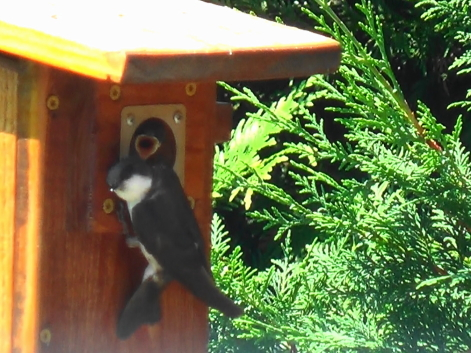
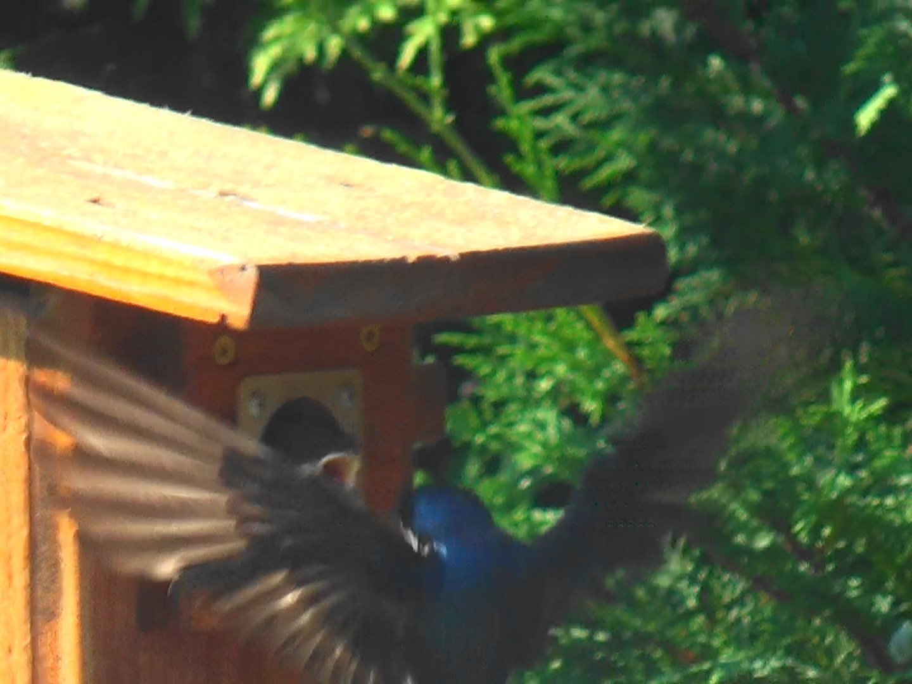

When The Swallows Come Back
written in Aug 2020
The Tufties were gone by mid May. Fledging was a full-fledge success. All the chicks left the birdhouse to face the big, wide world. The box was empty and nearly spotless - the parents did a great job cleaning up after the babies. New visitors arrived soon - a couple of wrens started to build their nest on top of the old one. And a blue bird flew by to check it in. But suddenly the birds disappeared. And the reason was ants. Suddenly swarms of them came into the birdhouse,
infesting both nests, apparently through the inner hollow of the pole stand. I had to do my bird-lordly duties:
remove the new wrens' and the old tufties' nest, seal the pole and scrub the house with boiling hot water.
Finally the clean and dry house was back in operation. Next day, May 25th, I opened it to make sure no ants made their way into the house. There were no insects, and there was already a base of dried vegetation, the foundation for a brand new nest! And here comes the story of True Blue and Mulan.


Soon it was obvious who claimed the birdhouse. It was a pair of tree swallows. Blue-feathered tree swallow was guarding his mate while she was collecting dried grass and building the nest. Meet Mulan, for she'll prove to be a fearless princess.
| May 26, early afternoon | May 26, late afternoon |
|---|---|

|

|

Tree swallows build their nests in late April or early May around here. brood Was this a late bloomers couple?
Did they have problems competing for a box before? Was their first try unsuccessful? Hopefully everything will work this time.
A little over 3 weeks after after claiming the birdhouse, swallows disappeared. It was June 17.
The nest was completely finished, topped with lots of geese, duck and gull feathers brought from the lake. Was there something under the feathers? Likely, yes. So I promptly closed the box. The swallows were back later that day. A few days later it was obvious, they had new additions to their family!
Both parents were busy taking care of their little ones - bringing food and clearing fecal sacs. Soon the babies were sitting next to the opening of the bird house, always hungry and ready to eat. A lot of activity was happening on the 2nd of July. How old could the babies be?
| July 2 | July 2 |
|---|---|
|  |
Baby swallows start sticking their heads out of the nest and practice "hole hogging" about a week before fledging. Incubation period for tree swallows is ~14-15 days (bit it could be 11 to 19 days). Nest construction may take a couple of weeks, but can be as short as 5 days if there is plenty of construction material around. The chicks are ready to fledge 18-22 days (but it could be as early as 15 days and as late as 25 days).
Based on my observations, if the stars aligned, the first chick could fledge by the end of the week. But a few more days or even an extra week in the nest would help them to be stronger. So I stopped using
the side door close to the nest - no one should startle the babies!
But the babies got out early anyway. All of them!
| July 3 | July 3 |
|---|---|
|  |

I heard a lot of chirps and "whirrs" on July 3rd. It was about 4pm when I finally realized what happened. A prematurely fledged chick was sitting on the rocks unable to fly. Meet Bit. Poor little Bit. He was a healthy little chick and a great hopper, but his tiny little wings were not ready for a flight. I gave him a lift - quickly put him on the palm of my hand and placed the hand next to the opening of the bird house. He promptly hopped into his house. And in a moment True Blue was there feeding the chick!
Little Bit closed his eyes from happiness, digesting his meal after such a difficult day.
Next day everything was very quiet.
He was gone. Hopefully this time he was more successful. Later as I walked in the garden and made a step towards the bird house from another corner of the yard, Mulan flew towards me, made a few circles around my head as I changed my direction, and went back to her tree. I was not sure why, but thought that little Bit must be OK. She doesn't want me to be near the bird house so I won't go there. Later I realized what was happening. Another chick that also flew prematurely was still on the ground. 3 days later I saw little Bib. The wings were a little larger than Bit's, but Bib
seemed to be trapped in a groove. Or was it?
They say it's normal for baby chicks to flutter on the ground with parental encouragement before they get airborne. Bib was on the ground for 3 days. It could be still OK, his parents were not abondoning him. As he saw me, he squized into a narrow but deep hole between bricks. Perhaps I was not supposed to do it, but I removed the bricks to take him out. The chick was very weak. I placed him in the palm of my hand, on his feet, and offered him to hop into the birdhouse. But Bib did not seem to want it.
| July 6 - parents | July 6 - parents and a chick |
|---|---|
 |

{kind=link}
{kind=link}
{kind=link}
{kind=link}
{kind=link}
{kind=link}
{kind=link}
I was standing with the bird in the palm of my hand thinking what to do. Suddenly the chick started flying as his mom, Mulan, dived down flying along his side! Unfortunately, Bib still could not fly up so he landed under the tree, near Chris. Mulan attacked Chris, then flew towards me telling me to leave. And we left. Both parents were flying in the sky guarding the baby. At some point they were joined by another swallow. Was it their oldest chick?
In late summer swallows stream to coastal marshes where they form larger and larger flocks preparing for their long journey.
Goodbye Swallows. I'll wait for you next Spring.